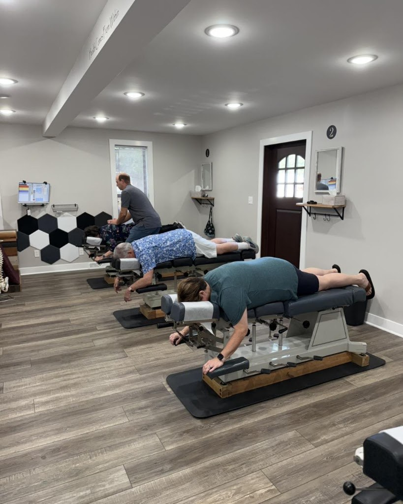
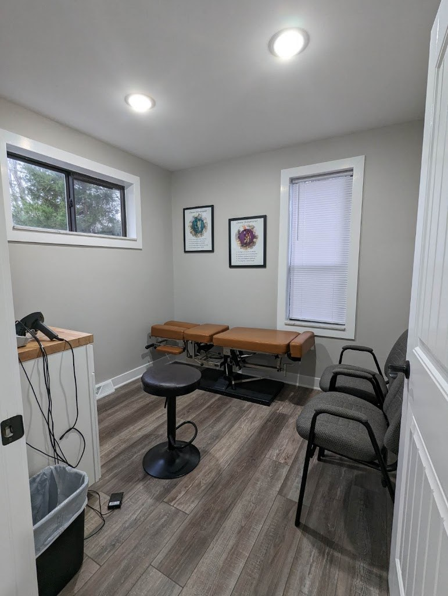
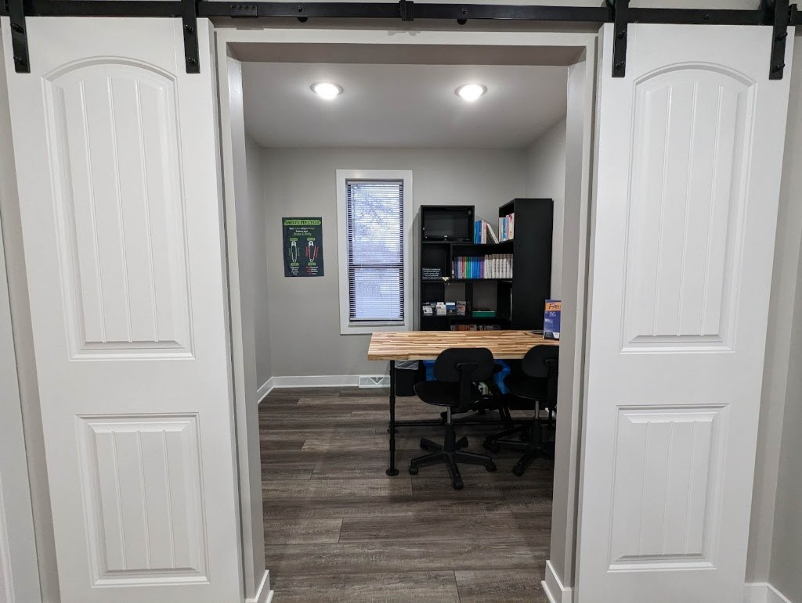

Family Chiropractor, Lexington KY
Bullock Family Chiropractic
Family chiropractic in Lexington with Dr. Jacob Bullock, D.C., with 15+ years of experience, spinal adjustments, and care for the whole family.
Dr. Jacob Bullock, D.C., 15+ years. Best of Lexington 2008 and 2009.
Call (859) 272-0099 Email info@bullockfamilychiropractic.com

About
Bullock Family Chiropractic is a family chiropractic practice in Lexington, Kentucky, at 2028 Regency Road. Dr. Jacob Bullock, D.C., has more than 15 years of experience. The practice offers spinal adjustments, upper cervical care, pediatric and pregnancy care, and family wellness, with SEMG scanning, thermal analysis, and wellness education, and treats headaches, neck and back pain, sciatica, and sports and car-accident injuries. Bullock Family Chiropractic was named Best of Lexington in 2008 and 2009. Hours are Monday and Wednesday 9:00 AM to 12:30 PM and 3:00 PM to 6:30 PM, and Friday 8:30 AM to 12:30 PM and 3:00 PM to 6:30 PM. Call (859) 272-0099 or email info@bullockfamilychiropractic.com to ask about an appointment.
Chiropractic care
Spinal adjustments
Spinal adjustments for the whole family.
Upper cervical care
Upper cervical chiropractic care.
Pediatric care
Chiropractic care for children.
Pregnancy care
Chiropractic care during pregnancy.
Family wellness
Family wellness care.
SEMG scanning
SEMG scanning as part of the assessment.
Thermal analysis
Thermal analysis as part of the assessment.
Wellness education
Wellness education for patients.
Headaches
Care for headaches.
Neck and back pain
Care for neck and back pain.
Sciatica
Care for sciatica.
Sports and car-accident injuries
Care for sports and car-accident injuries.
Care for the whole family
Bullock Family Chiropractic cares for the whole family, from children to adults. Call (859) 272-0099 to ask about an appointment.
Gallery


All three photos are the practice's own public photos from its Google Maps listing. They show the treatment rooms and office.
Visit
Address: 2028 Regency Rd, Lexington, KY 40503
Hours: Monday and Wednesday 9:00 AM to 12:30 PM and 3:00 PM to 6:30 PM. Friday 8:30 AM to 12:30 PM and 3:00 PM to 6:30 PM.
Phone: (859) 272-0099
Contact
Call (859) 272-0099 Email info@bullockfamilychiropractic.com
Bullock Family Chiropractic serves Lexington, KY. Questions? Call (859) 272-0099.